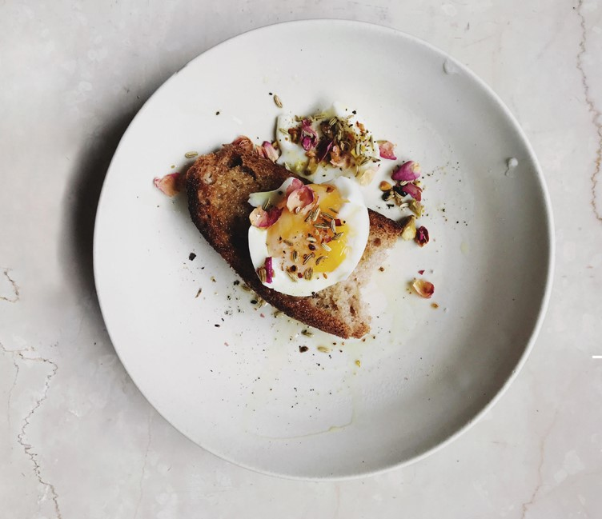

Seattle, Wa
Aran is a freelance food writer, stylist, and photographer in our beautiful rainy city. She captures
some of the most brightest and vibrant creations.

New York
Brandon Woelfel is a photographer famous for his Instagram where he posts photos playing with
lights and colors.

Los Angeles, Ca
derrick freske is a portrait, lifestyle, and commericial photographer with a unique style and is
famous for his Instagram.

Seattle, Wa
Jon is a wedding photographer who "loves life, loves coffee, and loves to celebrate moments with
the finest people"!